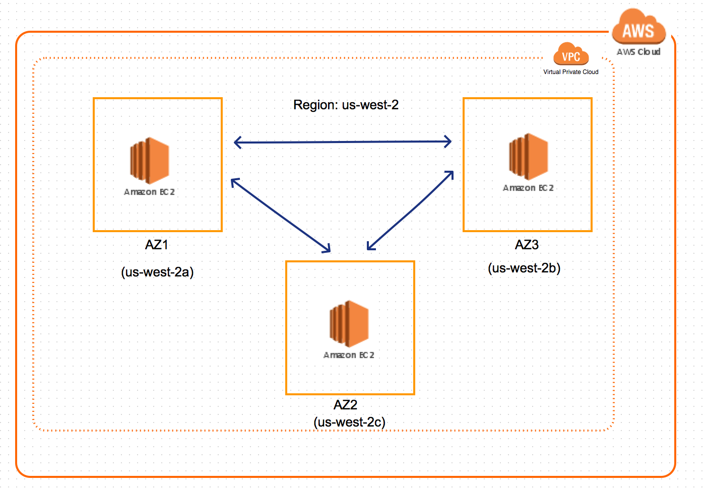

This is the first of the multi part series on Cassandra. In each part I will cover one aspect amount setting up, managing and monitoring Cassandra on
Amazon Web Services.
In this first part I will focus on the setup of Cassandra on AWS.
Deployment Model
Cassandra will be set up as a multi-node cluster on AWS. AWS is
spread over multiple regions and each region has multiple availability
zones(AZ) within them.
Each region will start with at least 3 nodes in a cluster.
The nodes will be spread across different AZ's. Most of the AWS regions have atleast 3 different AZ.
In regions where there are less than 3 AZ's, two nodes will share the same AZ.

Fig 1: Cassandra deployment in a region spread over multiple availability zones (AZ)>
Setup
AWS
Choose a region which has three availability zones. For the purpose of this post, I have choosen us-west-2.
Spin up one EC2 instance in each availability zone.
Databased should always be on private subnets of VPC and should not be open to internet.
Update the firewall setting on the secutiry group associated with the EC2 instance to allow incomming traffinc on the following ports:
9042 CQL Client port 7000 Inter node communication on cluster
Installables
Download Cassandra 2.2.4V from the below URL.
http://downloads.datastax.com/community/dsc-cassandra-2.2.4-bin.tar.gz
Unzip it to a location on the EC2 machine.
Do this on all three nodes.
Cassandra Configuration
Make the below changes in the files present in the '/conf' folder of Cassandra.
File : cassandra-rackdc.properties
dc_suffix = 2a_cassandra # This property uniquely identify a node in a datacenter(DC).DC names are automatically assiged by Cassandra using EC2Snitch/EC2MultiRegionSnitch.
prefer_local = true
File : cassandra.yaml
partitioner: org.apache.cassandra.dht.Murmur3Partitioner # This is the default and we will keep it as it is. Used to hash and distribute the keys across differnt nodes.
endpoint_snitch: Ec2Snitch # Use EC2MultiRegionSnitch if you are setting up multiple clusters spanning different regions. Otherwise use Ec2Snitch
listen_address: 10.101.212.201 # This will be the private IP address of the EC2 instance. Will vary from instance to instance.
broadcast_address: 10.101.212.201 # private IP address of the EC2 instance.
rpc_address: 10.101.212.201 # private IP address of the EC2 instance
seeds: "10.101.212.206,10.101.214.60" ## IP address of the nodes acting as seeds
key_cache_size_in_mb: 100000
data_file_directories: # location where database files needs to be stored.
-/local/mnt/cassandra/data
commitlog_directory: /local/mnt/cassandra/commitlog #location where the commit logs needs to be stored.